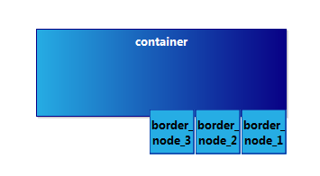
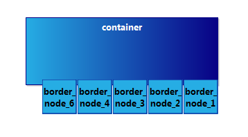
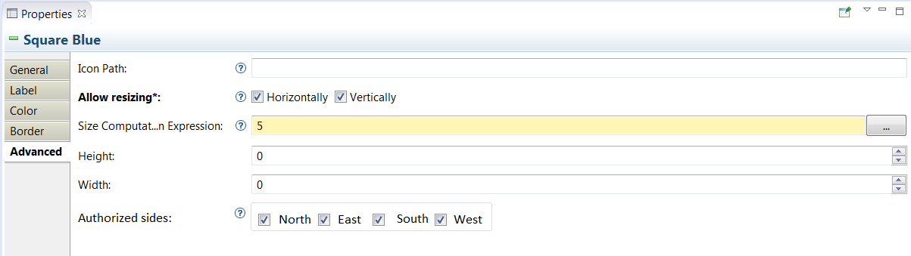

Sirius Evolution Specification: Allow to specify authorized sides for border nodes
Preamble
Summary: Allow to specify authorized sides for border nodes.
| Version |
Status |
Date |
Authors |
Changes |
| v0.1 |
DRAFT |
2015-04-08 |
smonnier |
Initial version. |
| v0.2 |
DRAFT |
2015-05-18 |
smonnier |
Updated. |
| v0.3 |
DRAFT |
2015-09-07 |
lredor |
Updated. |
Relevant tickets:
Introduction
The goal of this evolution is to be able to specify the authorized sides for border nodes.
Detailed Specification
A common Sirius code customization is to redefine the layout in order to choose on which sides a border node should be placed regarding its container. For example, the input port of a component should be on the left and the output port should be on the right. This specification presents how this behavior could be available in the VSM for the specifier.
- VSM Editor update :
- The style of a border node will display a new field in the
Advanced tab. The field will have the label
Authorized Sides with four checkboxes, one for each side. These sides will be displayed in the order West, South, East, North. This is the anti-clockwise order, which is already used in the border nodes placement algorithm. By default, every side (4 checkboxes) will be checked to match the current behavior.
- There is no display change for other nodes (nodes on diagram or in containers).
- Diagram updates :
- The default border node positioning is to start on the top of the west face and place the next ones anti-clockwise, changing side when needed. This behavior needs to be overridden in
DBorderItemLocator and
DDiagramCanonicalSynchronizer (more specifically
CanonicalDBorderItemLocator) as the side here is required.
- The anti-clockwise is true for sides when more than one authorized side is selected (West, then South, then East and finally North).
- But the anti-clockwise is not true for border nodes themselves when at least one side is not selected. In this case, the border nodes are placed logically on each side (from left to right for north and south side, and from top to bottom for west and east side).
- If too many border nodes are required to be on a side, they will overlap at the «extremity» (right extremity for north and south, bottom extremity for east and west). We consider it as the expected behavior.
- Let’s have a border node mapping defined as placed on the south border of its parent container. The element are placed logically, therefore left to right on the south border.

- When the border side if «full», the elements will be stacked at the «end» of this side, here the right side.

Note that on there are six border nodes but only five are displayed because
border_node_6 is displayed over
border_node_5 making it non visible.
- This new behavior should be in sync in the (Sirius) DNode locations as well as the GMF Node locations.
- Diagram visual operation should not move a border node to an unauthorized side even if it is closer. This concerns:
- Arrange all;
- Arrange selection;
- Arrange linked border nodes;
- Diagram element creation. Currently, the element is placed on the closest side. It should be placed on the closest authorized side;
- Diagram element Move (if the element is dropped on an unauthorized side, the element should go back to the previous location);
- Diagram element Resize (and the alternative resize with F3);
- Distribute selection;
- Align selection;
- Copy/Paste Layout;
-
Optional: in sequence diagram,
SouthCenteredBorderItemLocator and
ExecutionItemLocator could be reworked to use this Border Node location feature.
-
Lifelines are on the south border of the parent
Instance Role
-
Executions are on the east border of the parent
Lifelines or
Executions
-
End of life are on the south border of the parent
Lifelines
This new property concerns the style of the border nodes. However, the end user will not have the capability to change the value of the authorized sides.
Backward Compatibility and Migration Paths
- This evolution requires no migration. The
forbiddenSides reference of the
NodeStyleDescription is empty by default. This is the current behavior (all sides are authorized).
- Metamodel diagram.ecore updates :
- In the package
style an enumeration
Side should be created with the enumeration literals :
WEST,
SOUTH,
EAST,
NORTH;
- The metaclass
NodeStyleDescription should have an
forbiddenSides multi-values reference typed
Side.
API Changes
This evolution concerns the internal Sirius refresh and layouting mechanisms and should not modify APIs.
User Interface Changes
In the VSM, style of border node will have a new option to check the sides on which elements are authorized to be displayed.

Note that this option will not be available for non border node (node on diagram or inside a container).
Documentation Changes
- Update specifier documentation and release note about the ability to select on which sides of their parent, border nodes should be displayed.
Tests and Non-regression strategy
- test with a single border node on one side;
- test with a single border node on each side: 4 mappings then;
- test with more border node on one side than the side can display;
- test with more border node on one side than the side can display, for each side: 4 mappings then;
- test with mapping reused or imported in other context;
- test arrange all keeps border node on the authorized sides even if it would be closer on an unauthorized side.
- test arrange selection keeps border node on the authorized sides even if it would be closer on an unauthorized side.
- test diagram element move keeps border node on the authorized sides even if it would be closer on an unauthorized side.
- test diagram element resize keeps border node on the authorized sides even if it would be closer on an unauthorized side.
- test distribute selection keeps border node on the authorized sides even if it would be closer on an unauthorized side.
- test align selection keeps border node on the authorized sides even if it would be closer on an unauthorized side.
- test copy/paste layout keeps border node on the authorized sides even if it would be closer on an unauthorized side.
Implementation choices and tradeoffs
- Specific positioning of border nodes, like centered or equaly distributed will still be a custom java extension or another enhancement.
- It has been decided that the border authorized sides would be a property of the style. Putting the info on the node’s style means it will be «inherited» when the mapping is reused or imported in other contexts. It is not wrong, but an alternative would have been to make the container decide which of its bordered nodes it wants on which side. It is probably more complex to implement though.